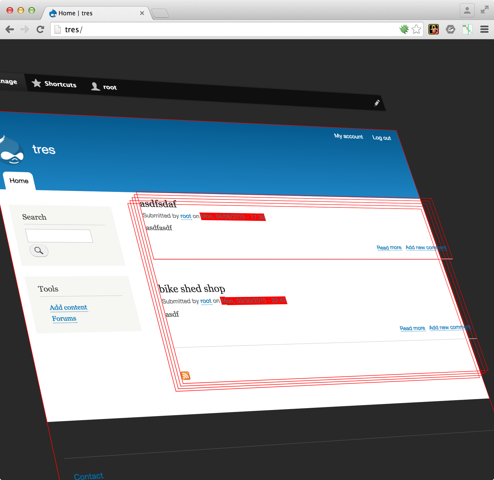

BigPipe
|
Wim Leers |
Fabian Franz |
So what is this Big Pipe thing?
I saw it this morning!

Oh, I know! It is this:
Nope!
But maybe this:
Or this!
Not really ...
I know! I know!
It is the pipe of a steam boat!

Uhm ... No!
But this time I am sure.
I watched that interview with Fabian Franz!
It is ...
Gandalfs Big Pipe!
Drops of Drupal
BigPipe of Drupal
- Introduction
- How to use
- Architecture
- Code
- Other possibilities
Front end
↕
Back end
Front end: CSS, JS, images, fonts … (assets)
↕
Back end: HTML
80–90% of time is spent on front end
⬇
Bigger speed gains on front end than on back end
Performance
↕
Perceived performance
- TTFB = Time to First Byte
- TTAP = Time to Assets Prefetching
- TTI = Time to Interact
- Page load time = total load time: until finished loading
First, optimize front end in typical way:
- optimize images
- minify & aggregate CSS/JS
- fewer HTTP requests (even for HTTP/2 in 2016)
- …
… but if the back end is already slow, the front end alone cannot make it fast.
Intersection of front-end & back-end performance
Example
| BigPipe | Traditional | |
| 50 ms | Initial HTML | … |
|---|---|---|
| 100 ms | More HTML | … |
| 150 ms | More HTML | … |
| 200 ms | More HTML | … |
| 250 ms | Final HTML | ALL HTML |
⬇
Page header visible after ~150 ms instead of ~350 ms
⬇
Changed back end improves perceived performance
Comparing
- Uncached/regular
- Page Cache
- Dynamic Page Cache
- BigPipe
0. Uncached/regular
Drupal needs to lots of things before replying
TTFB, TTAP, TTI: typically 100s of ms (~ back end)
1. Page cache
Drupal needs to do almost nothing before replying
- TTFB: ms (<10 ms)
- TTAP: low 10s of ms
- TTI: 100s of ms (~ front-end code)
- For anonymous users (unpersonalized pages)
- Enabled by default in Drupal 8
http://wimleers.com/blog/drupal-8-page-caching-enabled-by-default
2. Dynamic Page cache
Drupal needs to several things before replying
- TTFB: 10s to low 100s of ms (~ back-end code)
- TTAP: 100s of ms
- TTI: high 100s of ms (~ back-end + front-end code)
- For authenticated users (personalized pages)
- Enabled by default in Drupal 8
http://wimleers.com/article/drupal-8-dynamic-page-cache
3. BigPipe
Drupal needs to do almost nothing before replying, BUT continues to do things afterwards
- TTFB: low 10s of ms (~ server, typical: 15-40)
- TTAP: 10s of ms
- TTI: low 100s of ms (~ front end)
- For authenticated users (personalized pages)
- Candidate for Drupal 8.1 or 8.2
drupal.org/project/big_pipe
How?
At a high level
Cacheability metadata in Drupal 8
- Cache tags (data dependencies)
- Cache contexts (context dependencies)
- Cache max-age (time dependencies)
+
Cacheability bubbled during rendering!
Improved Render API
- rendering in isolation: "lazy builders"
- auto-placeholdering
renderer.config: auto_placeholder_conditions: max-age: 0 contexts: ['session', 'user'] tags: []
renderable in isolation
+
poor cacheability
⬇
auto-placeholdered: deferred rendering via BigPipe

2. How to use
How to use BigPipe on your Drupal site
Install BigPipe module — zero configuration
Drupal 8.1: included as experimental module!
Drupal 8.0: d.o/project/big_pipe
Try BigPipe demo
- bigpipe.demo.wimleers.com, locally or simplytest.me
- Simulate slow blocks
?big_pipe=off, observe difference
Just try
"Jumpiness"? → make CSS more robustalso great for 3G!
Slow code not BigPipe'd? → simulate in BigPipe demo then fix
So:
- Play
observe the difference - Analyze
site has uncacheable/personalized content? - Simulate
install BigPipe (demo) - Adopt
fix cacheability metadata/render logic
3. Architecture
How Drupal is able to do this
- Cacheability metadata
tags, contexts, max-age + bubbling - Isolated rendering
#lazy_buildercallbacks (guarantee isolation) - Auto-placeholdering
if poorly cacheable and renderable in isolation - Placeholder strategies
default = replace before sending complete response (1 flush)
BigPipe = replace after sending unpersonalized response (N flushes)
BigPipe sends:
- initial page directly from Dynamic Page Cache
- rendered BigPipe placeholders, in DOM order
d.o/developing/api/8/render/pipeline + wimleers.com/talk/drupal-8-render-pipeline
No infrastructure needed!
(Just the ability to stream responses: no buffering.)
⬇
For hobbyist & enterprise!
Edge cases
- Non-HTML placeholders form action URL …
- All placeholders if JavaScript off
⬇
Replaced without JavaScript
⬇
BigPipe always is an improvement
4. Code
How you can make your code BigPipe-compatible
4.A Cacheability metadata
To know when something is uncacheable/personalized.
In practice
Try to make this thought process a habit:
1.
I'm rendering something. That means I must think of cacheability!
2.
Is this something that's expensive to render, and therefore is worth caching?
↪︎ If "yes": cache keys.
$build['#cache']['keys'] = ['node', 5, 'teaser'];3.
Does the representation of the thing I'm rendering vary per combination of permissions, per URL, per interface language, per … something?
↪︎ If "yes": cache contexts.
$build['#cache']['contexts'][] = 'user.permissions';
$build['#cache']['contexts'][] = 'url';
~ HTTP's Vary header
4.
What causes the representation of the thing I'm rendering become outdated?
↪︎ If "yes": cache tags.
$build['#cache']['tags'][] = 'node:5';
$build['#cache']['tags'][] = 'user:3';
$build['#cache']['tags'][] = 'taxonomy_term:23';
5.
When does the representation of the thing I'm rendering become outdated?
↪︎ If "yes": cache max-age.
$build['#cache']['max-age'] = Cache::PERMANENT;~ HTTP's Cache-Control: max-age header
All relevant objects provide cacheability metadata!
interface CacheableDependencyInterface {
public function getCacheContexts();
public function getCacheTags();
public function getCacheMaxAge();
}Implemented by:
- configuration + entities (content & config)
- access results
- block, context, condition plugins
- …
4.B Renderable in isolation
To be able to defer rendering via BigPipe.
Typical: uncacheable, always slow
// Drupal 7.
function current_temperature() {
return [
'#markup' => temp_from_satellite(new LatLong('US', 'Boston')),
];
}
temp_from_satellite() runs always
// Drupal 8: now with cacheability metadata.
function current_temperature() {
return [
'#cache' => ['max-age' => 5], //→ cacheable for 5 seconds
'#markup' => temp_from_satellite(new LatLong('US', 'Boston')),
];
}
Still runs always
Better: render cacheable
function current_temperature() {
return [
'#cache' => [
'keys' => ['temperature'], //→ triggers render caching
'max-age' => 5,
],
'#latlong' => new LatLong('US', 'Boston'),//→ used in #pre_render
'#pre_render' => [
['current_temp_pre_render'], //→ does not run on cache hit
],
];
}
function current_temp_pre_render($build) {
$build['#markup'] = get_temp_from_satellite($build['#latlong']);
return $build;
}
temp_from_satellite() runs only if cache miss
But not isolated (can use anything in $build)
Best: render cacheable & isolated
function current_temperature() {
return [
'#cache' => [
'keys' => ['temperature'],
'max-age' => 5,
],
'#lazy_builder' => [
'current_weather_lazy_builder', //→ callback
['US', 'Boston'], //→ primitive args for callback
],
];
}
function current_temp_lazy_builder($country, $city) {
$latlong = new LatLong($country, $city));
return ['#markup' => get_temp_from_satellite($latlong)];
}
All calculations happen in the callback (including LatLong)
Isolated ⇒ deferable ⇒ BigPipe
Developer tool: renderviz
Visualizes cacheability metadata
d.o/project/renderviz + wimleers.com/blog/renderviz-prototype
5. Other possibilities
- More placeholder strategies, such as ESI
- Turbolinks load difference between current & next page
- Serviceworkers client-side proxy updated based on cacheability metadata
- …
RefreshLess
Turbolinks-but-better
(automatic, load only parts that change, uses cacheability metadata)